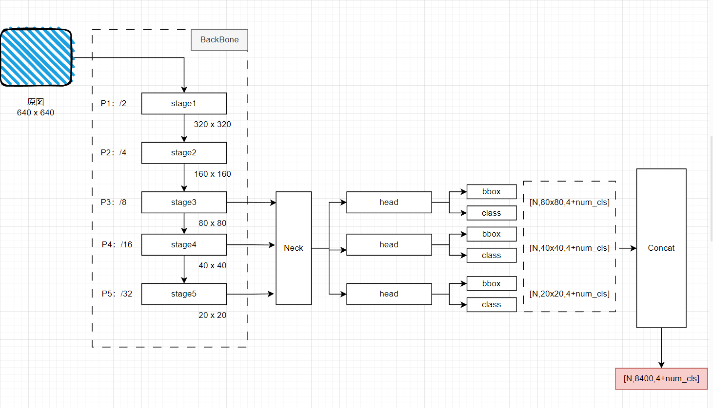

06 YOLOv8
YOLOv8
1.模型的输出维度

如果输入维度是[N, 3, 640, 640]，则输出维度是[N, 8400, 4+num_class]，其中：
- 8400 = 80x80 + 40x40 + 20x20，即把P3-5这层输出特征图上各个Grid的预测拼接到了同一个维度（这跟之前知乎上看的那个代码是一致的）
- 输出张量最后一个就是每个gird所预测的bbox的4个参数以及该bbox属于各类的概率
输出张量的第二个维度的通道数（8400）与输入YOLOv8模型的图片的大小有关！
All articles on this blog are licensed under CC BY-NC-SA 4.0 unless otherwise stated.